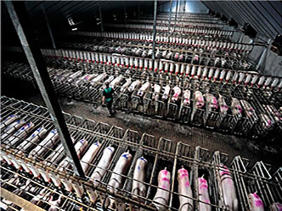
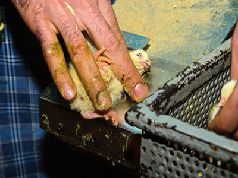
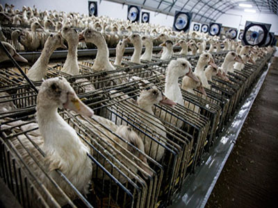

Pigs used for meat are typically artificially inseminated, and then bear around 13 piglets about 110 days later. During this time, these pigs are kept in crates, which are narrow cells that only allow for a few steps of movement.These mother pigs repeat the process over and over for around five years, and then are typically slaughtered to make room for newer mothers. After birth, male pigs are conventionally castrated without any anesthetic, in order to produce a better tasting meat upon slaughter. Then, the piglets spend around a month with their mothers, mostly because pig milk is not used for any sort of human consumption. During this time, their teeth and nails are clipped to prevent injuries. After this time period, the piglets are moved to a barn where they are fed and kept until their slaughter. Pigs are naturally intelligient animals, having around the same brain capacity as a three-year-old human child. Due to this, many of the pigs in factory farms become bored and agitated, and figths result. Once pigs are ready to be slaughtered, they are transported far distances, which causes them a great deal of stress. Before being slaughtered, pigs are usually stunned with carbon dioxide, which knocks them unconcious. They next get hung up, and slit open. Then they are cut and packaged for sale.

Chickens suffer some of the worst abuse, where males are often killed right after hatching, and the females are packed into boxes and then shipped off in order to gain weight to provide the most meat possible. They live in terrible conditions before being slaughtered on average 40 days later. Weak chicks never even make it this far, typically being thrown into a bucket to be killed by suffocation or crushing. Chickens used for egg production typically live in cages with multiple other birds, and not a lot of room. Most chickens produce eggs for around a year and a half in these conditions before being slaughtered.

Ducks, while maybe not always thought of as livestock, suffer hell on Earth from the day they are born in the farming industry. They are typically used for foie gras, which is the consumption of their liver. They live in tight cages, and fed with feeding tubes to bring nutrients directly to the stomach and liver in an effort to fatten them up quickly.

Above all, the dairy industry is excruciatingly cruel. Mother cows are artificially impregnanted, and then have their babies ripped away from them upon birth. Most male babies are typically slaughtered shortly after birth for veal production. The females are kept in harsh conditions with the expectation of repeating the cycle their mother lived through.
Slaughter is typically done in some sort of facility that completes mass killings of livestock. These are referred to as slaughterhouses. The animals rides to slaughterhouses are equally as horrible, being crammed into tight cages, exposed to outside elements, not given food or water, and traveling sometimes long distances. They are slaughtered by being stunned, decapitated, hung upside down and more. The worst part is, these animals have to watch it all happen to others before suffering the same fate.